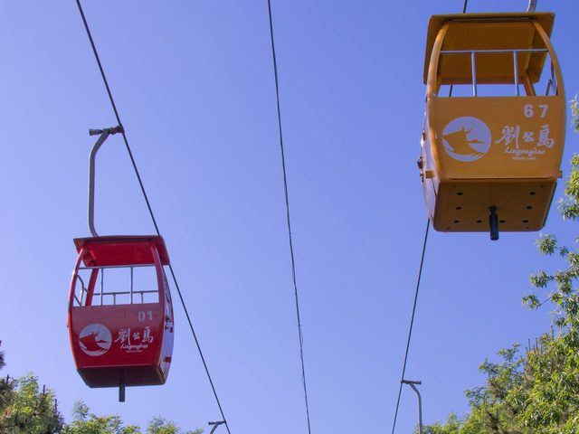
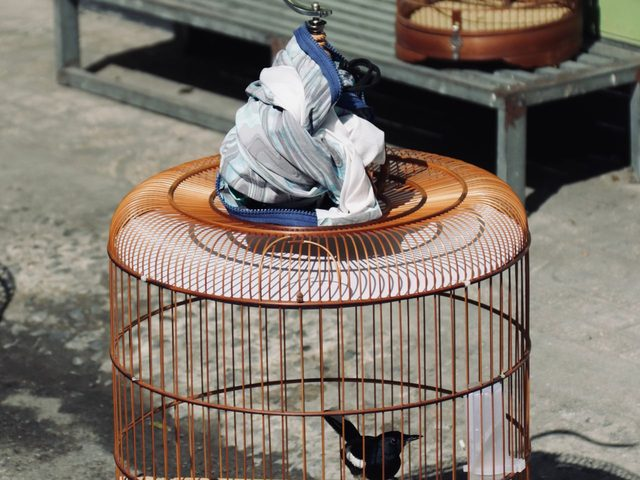
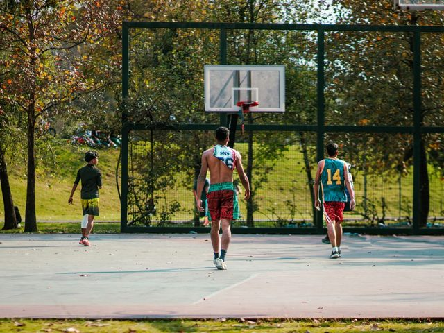

VOCABULARY · 主題 2000 字 PART 2 UNIT 34
Other nouns (1)．其他名詞（1）
其他名詞第一部分，accident 到 danger，共 40 個。很多是不可數名詞（advice、anger、attention、blood、courage），不能加 a 或 -s。
共 40 個單字．點 🔊 聽發音

1accidentn.
意外；事故
by accident 意外地
Three people were hurt in the car accident.有三個人在車禍中受傷。

2activityn.
活動
複數 activities
Our school has many after-school activities.我們學校有很多課後活動。

3advertisementn.
廣告
簡稱 ad
I saw an advertisement for a new phone on TV.我在電視上看到新手機的廣告。
4advicen.
忠告；建議
不可數；a piece of advice
Can you give me some advice about learning English?你可以給我一些學英文的建議嗎？
5aimn. / v.
目標；瞄準
aim at 瞄準
My aim is to read 50 books this year.我的目標是今年讀五十本書。

6alarmn.
警報；警鈴；鬧鐘
fire alarm 火災警報
The fire alarm rang, and everyone left the building.火災警報響了，大家都離開大樓。
7albumn.
相簿；專輯
photo album 相簿
Grandma showed me her old photo album.奶奶給我看她的舊相簿。
8angern.
憤怒；怒氣
不可數；angry 生氣的
He tried to hide his anger.他試著隱藏他的怒氣。

9armyn.
軍隊；陸軍
複數 armies
My uncle served in the army for two years.我叔叔在軍中服役兩年。
10Asiann. / adj.
亞洲人；亞洲的
Asia 亞洲
Rice is an important food in many Asian countries.米在許多亞洲國家是重要的食物。
11attentionn.
注意；專心
不可數；pay attention to 注意
Please pay attention to the teacher.請注意聽老師說。
12balloonn.
氣球
兩個 l、兩個 o
The little boy let go of his red balloon.小男孩放掉了他的紅氣球。

13basen.
底部；基礎；（棒球）壘
first base 一壘
The runner reached second base.跑者上了二壘。

14beautyn.
美；美女
Beauty and the Beast《美女與野獸》
We enjoyed the beauty of the mountains.我們欣賞山的美景。

15beginnern.
初學者
begin + n + er
This class is for beginners.這堂課是給初學者的。
16beginningn.
開始；開端
at the beginning of… 在…的開始
The story is boring at the beginning.這個故事開頭很無聊。

17bloodn.
血；血液
不可數；bleed 流血
The nurse took some blood from my arm.護士從我手臂抽了一些血。
18bombn. / v.
炸彈；轟炸
b 不發音
The police found a bomb in the old building.警察在那棟舊大樓裡發現一顆炸彈。

19branchn.
樹枝；分店
複數 branches
A bird is sitting on the branch.一隻鳥停在樹枝上。

20bundlen.
捆；束
a bundle of… 一捆…
He carried a bundle of newspapers.他搬著一捆報紙。

21cablen.
電纜；纜線
cable car 纜車；cable TV 有線電視
We took a cable car up the mountain.我們搭纜車上山。

22cagen.
籠子
bird cage 鳥籠
The bird is singing in its cage.那隻鳥在籠子裡唱歌。

23captainn.
隊長；船長；機長
Tom is the captain of our basketball team.Tom 是我們籃球隊的隊長。
24causen. / v.
原因；造成
cause = 原因；result = 結果
Nobody knows the cause of the fire.沒人知道火災的原因。
25centuryn.
世紀；一百年
複數 centuries
This temple was built a century ago.這座廟是一百年前蓋的。
26channeln.
頻道；海峽
change the channel 轉台
What channel is the baseball game on?棒球賽在第幾台？
27charactern.
角色；個性；字
Chinese characters 漢字
Mickey Mouse is a famous cartoon character.米老鼠是有名的卡通角色。

28chartn.
圖表
bar chart 長條圖
The chart shows how tall each student is.這張圖表顯示每個學生的身高。

29childhoodn.
童年
child + -hood
I had a happy childhood in the countryside.我在鄉下度過快樂的童年。

30coachn.
教練
複數 coaches
Our coach makes us run ten laps every day.我們的教練每天叫我們跑十圈。
31commandn. / v.
命令；指揮
The soldiers waited for the captain's command.士兵們等待隊長的命令。
32congratulationn.
恭喜；祝賀
常用複數 Congratulations!
Congratulations on winning first prize!恭喜你得到第一名！
33contractn.
合約；契約
sign a contract 簽約
The player signed a three-year contract.那位球員簽了三年的合約。
34couragen.
勇氣
不可數；brave 勇敢的
It takes courage to say sorry.說對不起需要勇氣。

35courtn.
法院；球場
basketball court 籃球場
We played tennis on the school court.我們在學校的球場打網球。
36crimen.
罪；犯罪
criminal 罪犯
Stealing is a crime.偷竊是一種犯罪。

37crowdn. / v.
人群；群眾；擠滿
crowded 擁擠的
A big crowd waited outside the concert hall.一大群人在音樂廳外面等。

38curven.
曲線；彎道
Drive slowly around the curve.彎道要慢慢開。

39damagen. / v.
損害；破壞
不可數
The typhoon caused a lot of damage.颱風造成很大的損害。
40dangern.
危險
dangerous 危險的；in danger 處於危險中
The sign says "Danger! Keep out!"告示寫著「危險！請勿進入！」
FOCUS
不可數名詞
| 字 | 怎麼數 |
|---|---|
| advice | a piece of advice |
| anger／courage | 不能數 |
| attention | pay attention to… |
| blood | some blood |
| damage | a lot of damage |
不可數名詞前面不加 a，後面不加 -s；可以用 some、a lot of、much。
FOCUS
名詞和形容詞
| 名詞 | 形容詞 |
|---|---|
| anger | angry |
| courage | courageous／brave |
| danger | dangerous |
| beauty | beautiful |